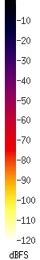

EasyHive Spectrum
Die folgende Grafik zeigt Frequenzspektren. Diese werden zurzeit automatisch aus den gerade gemessenen Audioaufnahmen generiert. Um zu sehen wie genau die Spektren generiert werden, lest doch auf unserem Blogbeitrag dazu nach!
Datum
EasyHive Temperaturverlauf
Die Kurve beschreibt den aktuellen Temperaturverlauf im Bienenstock. Wir haben im Inneren des Bienenstocks, nahe dem Einflugsloch, ein Thermometer platziert. Die so generierten Daten stellen wir hier durche eine einfache Kurve dar. Die Temperatur wird jede Minute einmal gemessen. Die dahintergelegte Kurve dient nur der Anschaulichkeit.